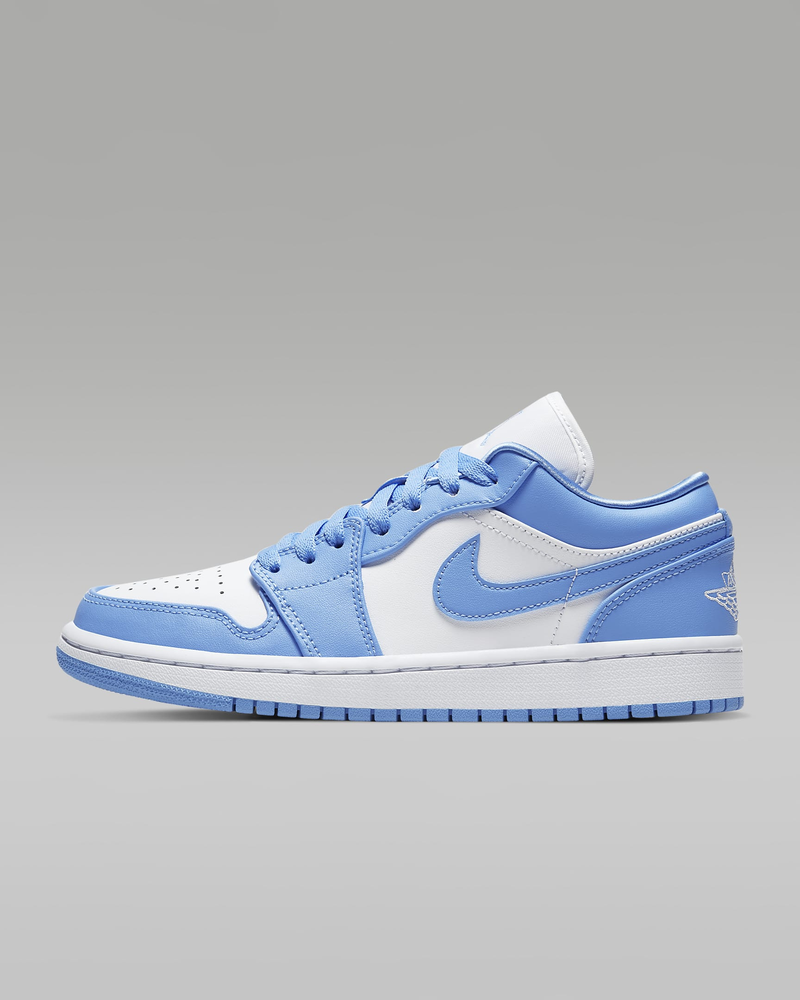

Air Jordan XXXVIII Low PF
Get grounded, stay grounded. The AJ XXXVIII is all about groundwork—we're talking about your running, your cutting, your turn-around jumpers—with low-to-the-court cushioning and a secure upper that helps support every move.
Jordan 4

Air Jordan 1 Low
The Air Jordan 1 Low combines the iconic look of the original with a fit and feel that's been re-tooled for lightweight, all-day comfort.Air Jordan 1Colour Shown: University Blue/White/University Blue
Women's Shoes